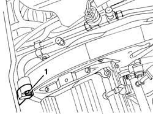
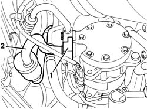

5040A61 pipe from evaporator fitting to compressor - r r
- Path
- Procedures > 50 AUXILIARY UNITS > 5040 AIR CONDITIONING CASING AND COMPONENTS > 5040A air conditioner coolant circuit > 5040A61 pipe from evaporator fitting to compressor - r r
- Kind
- repair procedure (removal / refitting; the operation number is the code)
- Applies to
- engines: 2.5 V6, 3.2 V6; all production periods
- Interactive page
- https://sloeber94.github.io/elrnDB-a156/en/#/3238317
Applies to: engines: 2.5 V6, 3.2 V6; production: da 03/02 a 09/03, da 10/03; only with equipment: Air Conditioner
 Removing
Removing
 Refitting
RefittingPlace the vehicle on a lift.
Drain the coolant ( 5040A10 Air conditioning refrigerant CIRCUIT - Draining and Refilling ).
1. Working on the right side of the engine compartment, disconnect the coupling for the pipes from the evaporator to the compressor.

Applies to: engines: 2.5 V6, 3.2 V6; production: da 03/02 a 09/03, da 10/03; only with equipment: Air Conditioner
7055B54 under-engine guard - r r
1. Disconnect the couplings for the compressor pipes.
2. Remove the pipe from the connector for the pipe between the evaporator and the compressor.

Applies to: engines: 2.5 V6, 3.2 V6; production: da 03/02 a 09/03, da 10/03; only with equipment: Air Conditioner
Refitting
RemovingCheck that the pipe is not damaged and that there are no cracks which would affect the seal.
Position the pipe and connect the couplings for the compressor pipes.
7055B54 under-engine guard - r r .
Connect the coupling for the pipes from the evaporator to the compressor.
Repressurize using coolant fluid ( 5040A10 Air conditioning refrigerant CIRCUIT - Draining and Refilling ).
Remove the vehicle from the lift.